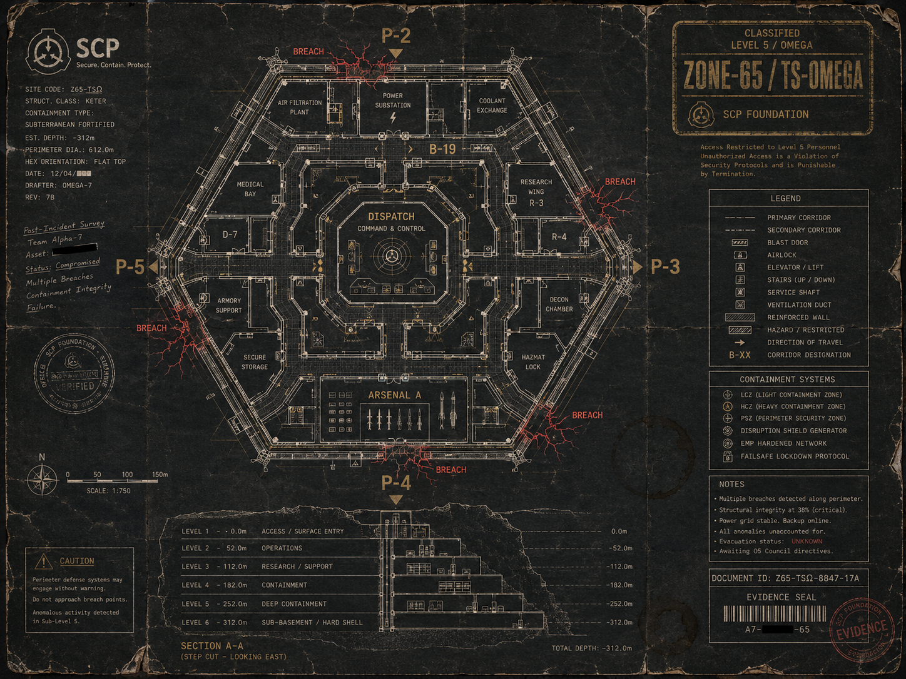

Схема объекта (для ориентации)

I. Контакт — первая фаза
Канал TAC-1, командный. 23:28 — 23:34 UTC. Внешний периметр.
II. Эскалация — периметр рвётся
Все каналы. 23:34 — 23:42 UTC. Прорыв P-2, P-4, потеря восточных коридоров.
III. Глубина — «оно» снаружи
TAC-1 + борт. 23:42 — 23:51 UTC. Первый контакт с колоссальной сущностью.
IV. B-19 — последняя запись Уокера
TAC-3 · 23:46 UTC. Коридор B-19. Точка с нагрудной камеры ATT-02 в полевом отчёте.
V. Распад — последние пятнадцать минут
Все каналы. 23:48 — 23:58 UTC. Эвакуация Волькера. Голос «Колокола» гаснет последним.
Замечание расшифровщика
В материалах сохранено максимально близкое к оригиналу звучание. Грубые обороты заменены только там, где это требовалось для понимания фразы. Имена близких, упомянутые операторами в последние минуты — не цензурированы по согласованию с кадровой службой.
Дополнительные материалы, относящиеся к указанным отрезкам:
- Кадр с нагрудной камеры N7-0827 в 23:46:19 UTC — см. ATT-02 в полевом отчёте.
- Аэрофотосъёмка периметра в 23:47:12 UTC — см. ATT-01 там же.
- Кадр с борта Helix-2 в 23:51:08 UTC — см. ATT-03 там же.
- Поимённый список потерь — см. сводный реестр.
— расшифровал: сл. связи Ню-7 М. Хоэн
— верифицировал: кап. А. Волькер
— приобщил к делу BLACK CASCADE: сл. Н. Кросс, ОВР
— статус: приложение к полевому отчёту · окончательная версия